Diversidad
Biología de las Plantas: laboratorio
Grupo de Estudios Botánicos GEOBOTA, Universidad de Antioquia
2023-03-23
Introducción
Embryophyta
- Alternancia de generaciones
- Gametófito
- Esporófito
- Embrión
- Gametangios
- Anteridios
- Arquegonios
- Cuticula
- Parénquima
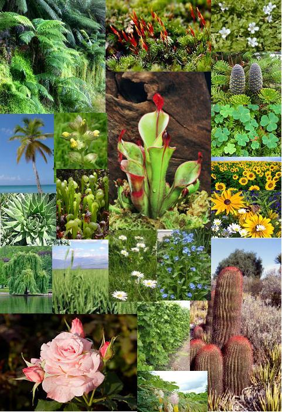
TadejM (2007)
{kind=link}
Alternancia de generaciones

Simpson (2019)
Embryophyta: diversidad y relaciones

Gitzendanner et al. (2018)
Embryophyta: diversidad y relaciones
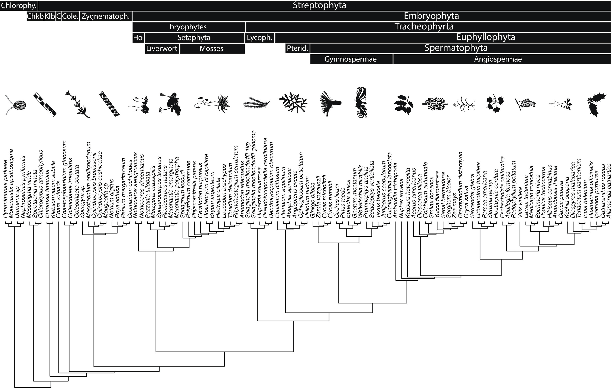
Puttick et al. (2018)
Embryophyta
- Bryophyta s. l.
- Anthocerophyta
- Setaphyta
- Marchantiophyta
- Bryophyta s. s.
- Tracheophyta
- Lycopodiophyta
- Euphyllophyta
- Monilophyta
- Spermatophyta
- Gimnospermae
- Angiospermae
Anthocerophyta
- Gametófito taloso (fase dominante)
- Esporófito
- aéreo, alargado, cilíndrico, fotosintético y con crecimiento indeterminado
- dehiscencia longitudinal
- Columela de tejido estéril
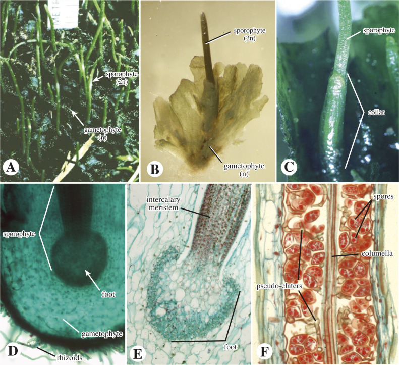
Simpson (2019)
Anthocerophyta: ciclo de vida

LadyofHats (2009)
{kind=link}
Marchantiophyta
- Gametófito folioso o taloso (fase dominante)
- Esporofito pequeño, no fotosintético y de corta duración
- Esporangio (cápsula)
- Cuerpos oleíferos
- Eláteres
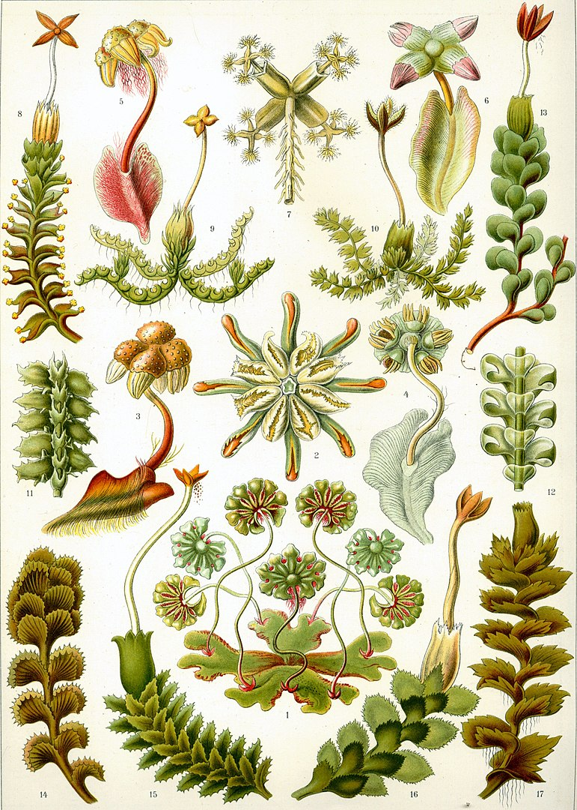
Haeckel (1904)
Marchantiophyta: talosas
- Rizoides uniseriados y filamentosos
- Poros
- Copas (reproducción asexual)
- Anteridióforos
- Arquegonióforo
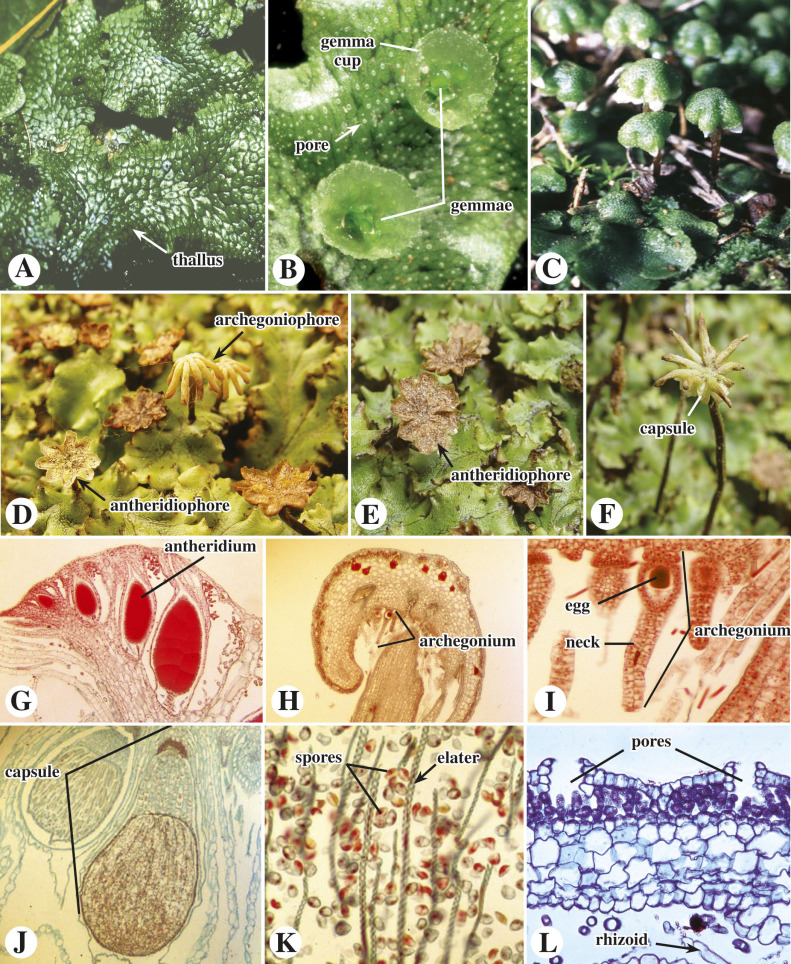
Simpson (2019)
Marchantiophyta: foliosas
- Eje dorsiventral a forma de tallo con tres filas de hojas de tamaño variable
- Anteridios en ramas laterales (androceo)
- Arquegonios en el extremo del eje (perianto)
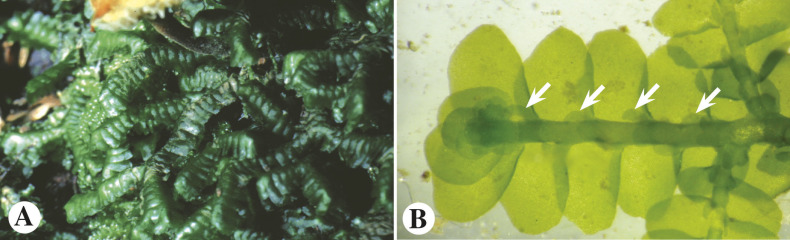
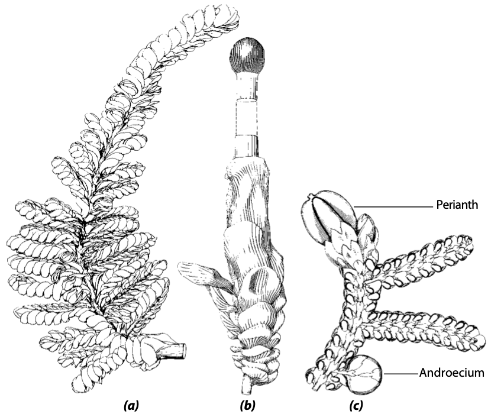
Marchantiophyta: - ciclo de vida

Evert & Eichhorn (2013)
Bryophyta
- Gametófito folioso (fase dominante)
- Eje erecto o rastrero (caulidio)
- Hojas pequeñas, delgadas y sésiles (filidios), con costa
- Rizoides pluricelulares y ramificados
- Esporófito aéreo y alargado
- Seta, opérculo y caliptra
- Hidroides y Leptoides (conducción)
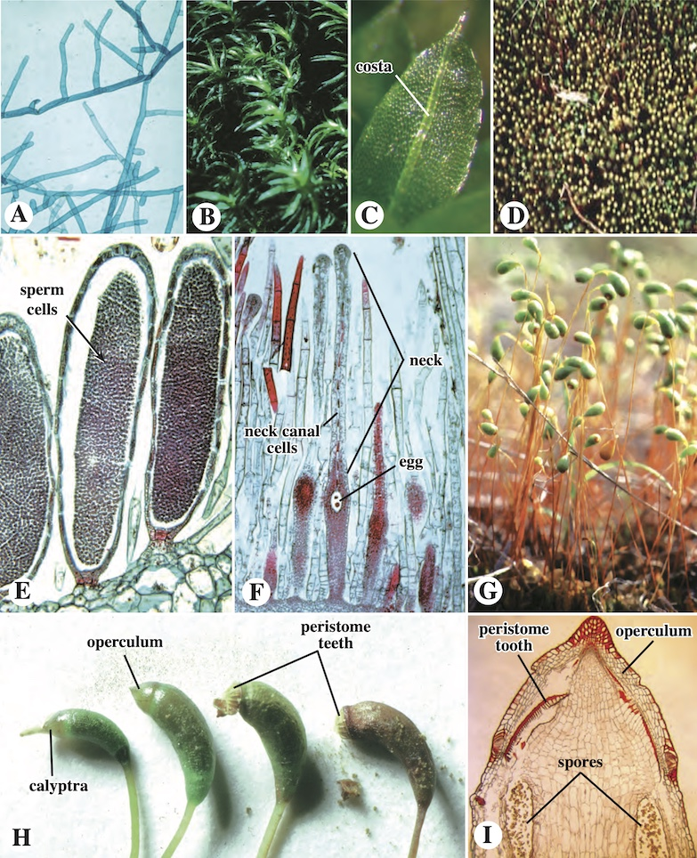
Simpson (2019)
Bryophyta: ciclo de vida

Evert & Eichhorn (2013)
Tracheophyta
- Esporofito (fase dominante)
- ramificado e independiente de vida larga
- Células con pared secundaria lignificada
- Esclerénquima y colénquima
- Xilema y floema
- Raíces verdaderas con endodermis
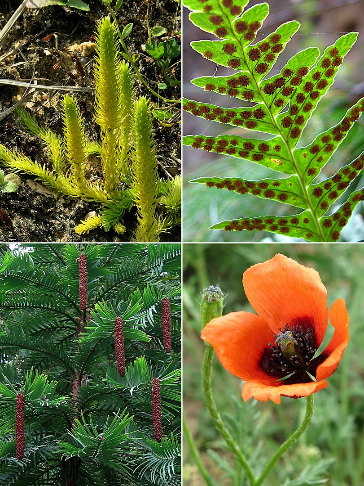
Kostka (2023)
{kind=link}
Lycopodiophyta
- Raíces bipodales con protoxilema endarco
- Tallo con protoxilema exarco
- Hojas licofilas o micrófilas
- Lycopodiales
- Lycopodiaceae
- Isoetales
- Isoetaceae
- Sellaginellaceae
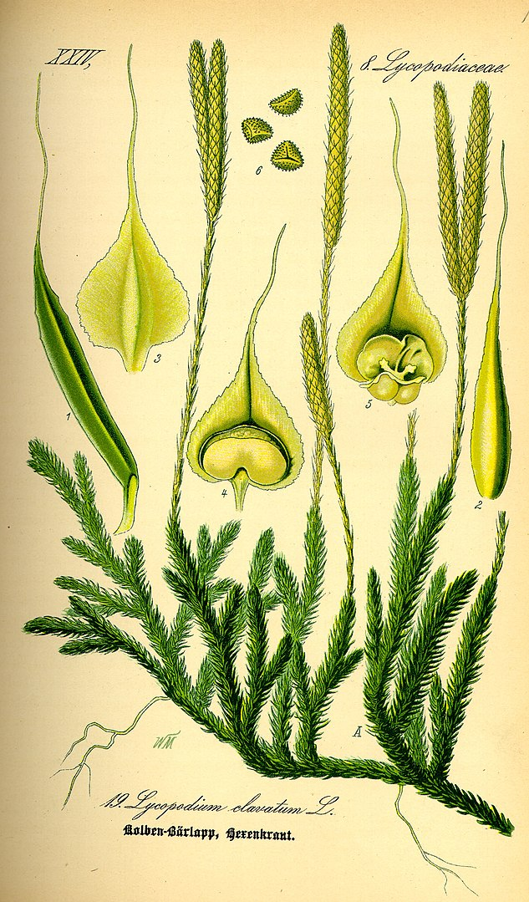
Thomé (1886)
Lycopodiales
- Hierbas erectas, postradas o pendulas
- Microfilos espiralados o verticilados
- Homospóricos
- Esporangios en la cara adaxial de los esporofilos (estrobilos cuando están agrupados)
- Raiz y tallo dicotómicamente ramificados
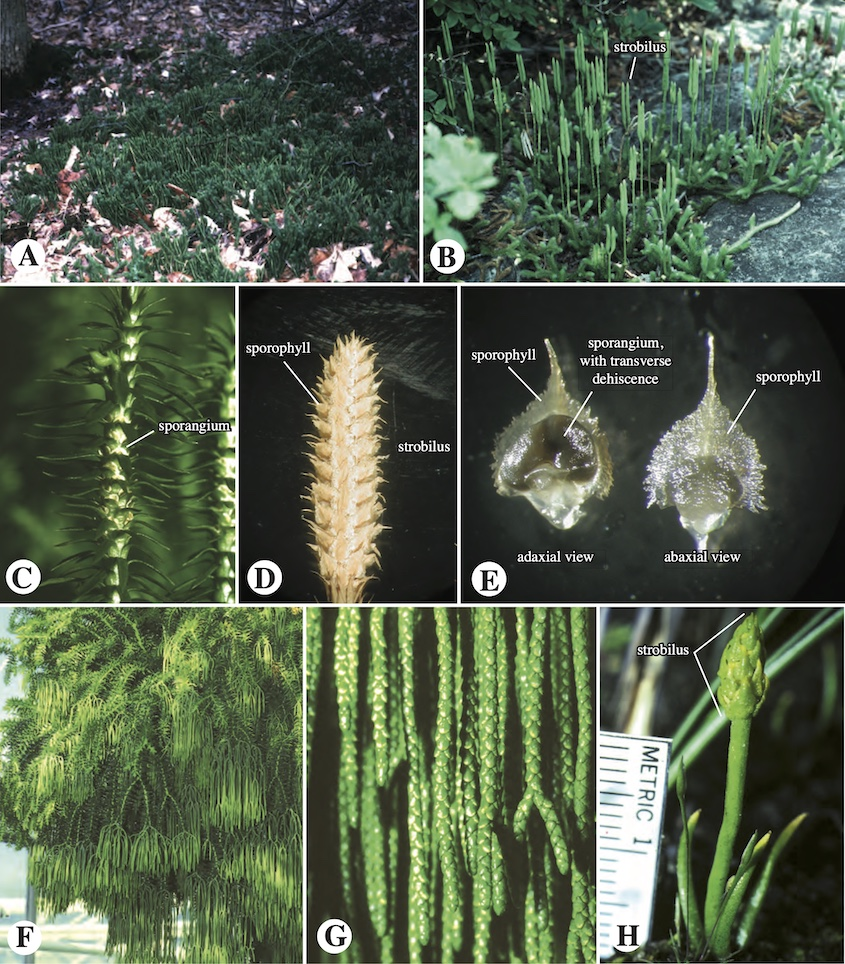
Simpson (2019)
Lycopodiales: ciclo de vida

Evert & Eichhorn (2013)
Isoetales
- Presencia de ligula
- Heterospóricos
- Megasporas producidas en megasporocito
- Microsporas producidas en microsporocitos
- Endospóricos (gametofito se desarrolla dentro de la pared de esporas)
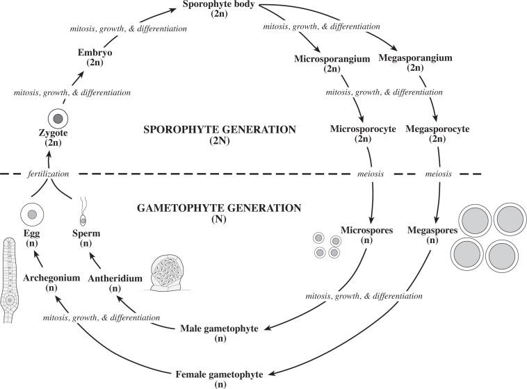
Simpson (2019)
Isoetaceae
- Usualmente acuáticas (parcialmente sumergidas)
- Microfilos en espiral, ensanchados en la base y apicalmente lineales a aciculares.
- Esporangios en la cara adaxial de los esporofilos
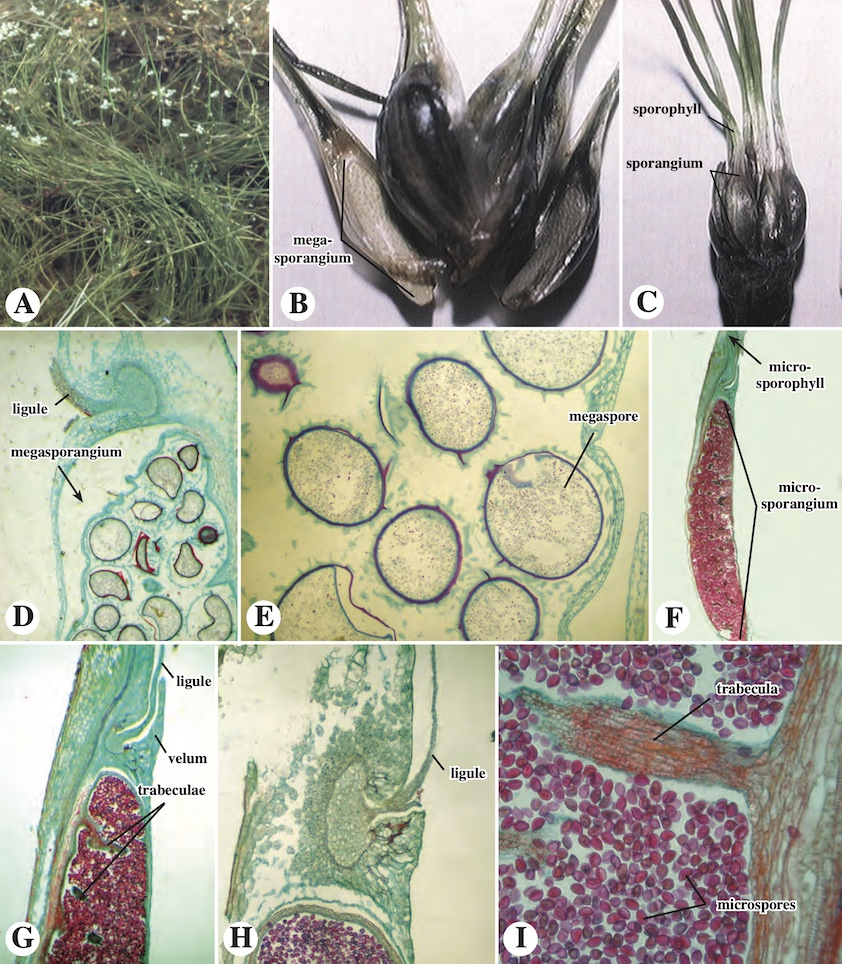
Simpson (2019)
Sellaginellaceae
- Hierbas erectas a postradas
- Microfilos en espiral, homomorficos (isofilia) o dimorficos (anisofilia)
- Esporofilos en estrobilos
- Megasporangio en megasporofilos y microsporangios en microsporofilos
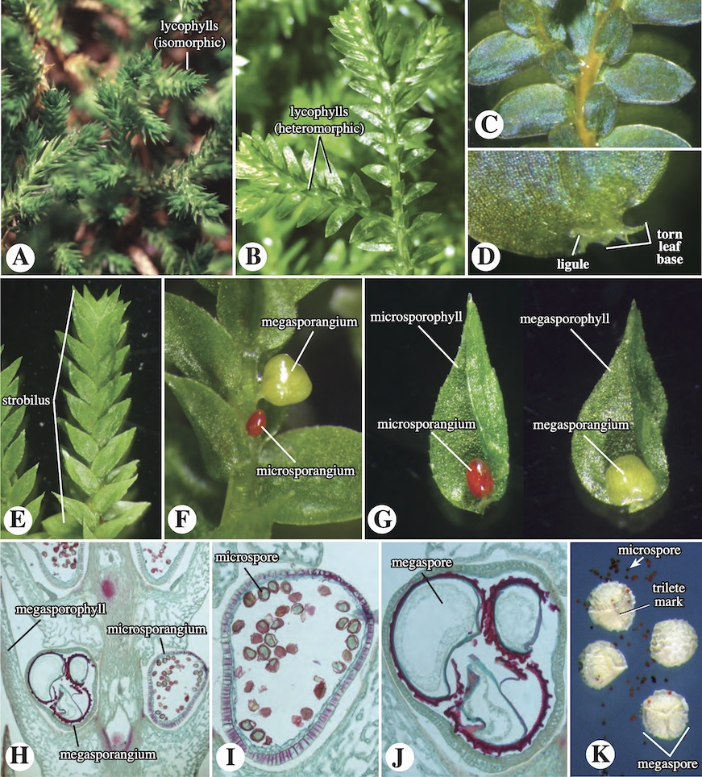
Simpson (2019)
Sellaginellaceae: ciclo de vida

Evert & Eichhorn (2013)
Euphyllophyta
- Hojas eufilas o megafilas
- Laguna foliar
- Venación
- Raíz monopodial
- Endodermis
- Periciclo
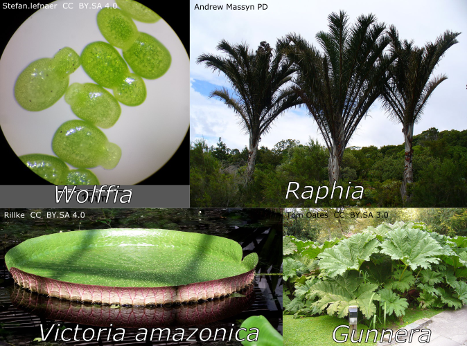
Monilophyta
Sifonostela
Protoxilema mesarco
Divisiones:
- Equisetopsida
- Psilotopsida
- Marattiopsida
- Polypodiopsida

Megías Pacheco et al. (2017)
Equisetopsida
- Tallos acanalados
- Hojas reducidas, verticiladas y marginalmente fusionadas
- Esporangióforos en estróbilos
- Esporas fotosintéticas con eláteres
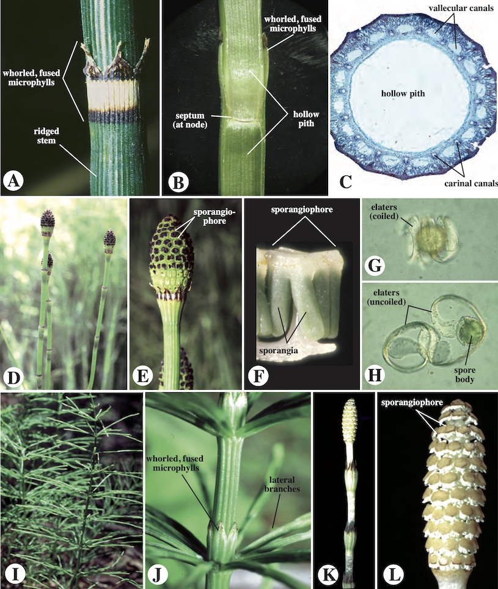
Simpson (2019)
Equisetopsida: ciclo de vida

Evert & Eichhorn (2013)
Psilotopsida
Gametofito no fotosintético y subterráneo
Esporangio eusporangiado ubicado adaxialmente
Raíz sin pelos radicales/ramificaciones o ausente
Ordenes:
- Ophioglossales
- Psilotales
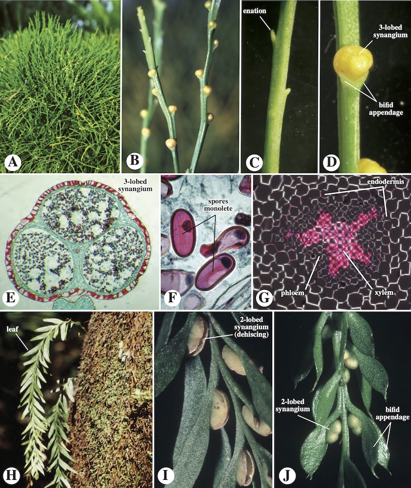
Simpson (2019)
Marattiopsida
- Esporangios eusporangiados fusionados formando un sinangio
- Sifonostela policíclica
- Frondas
- Soros abaxiales, intramarginales, exindusiados (sin inducio).
- Canales mucilaginoso
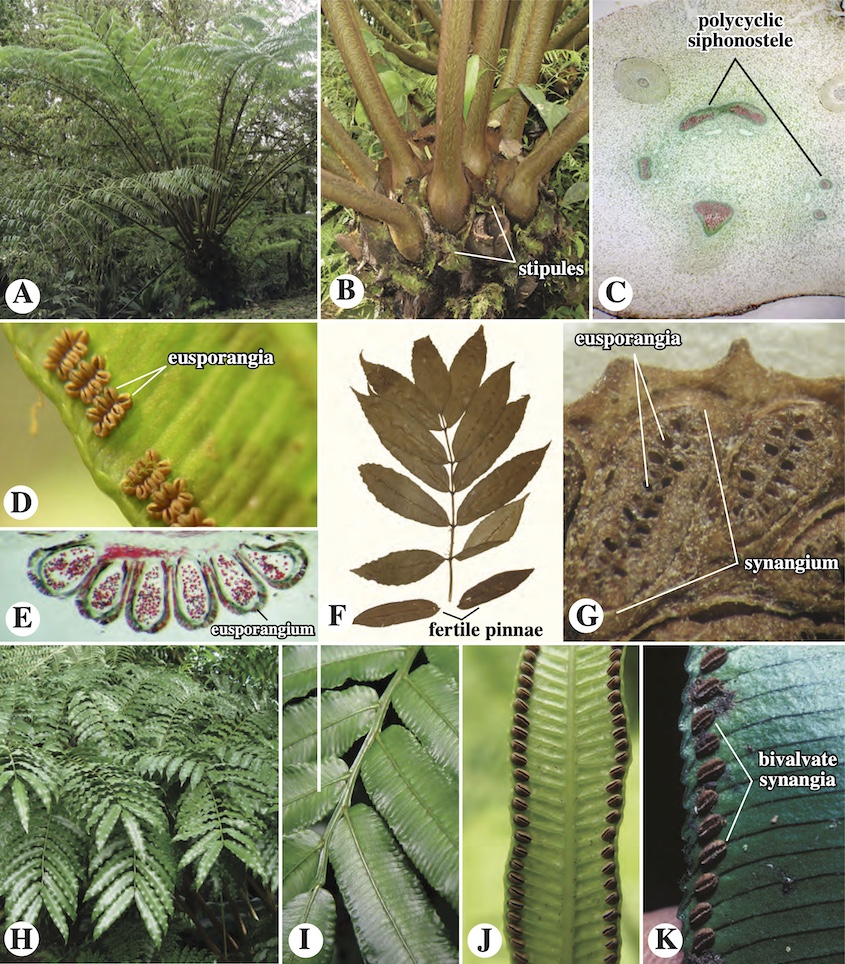
Simpson (2019)
Polypodiopsida
- Esporangio leptosporangiado
- Soros con o sin indusio
- Frondas con prefoliación circinada
- La mayoría presenta rizomas
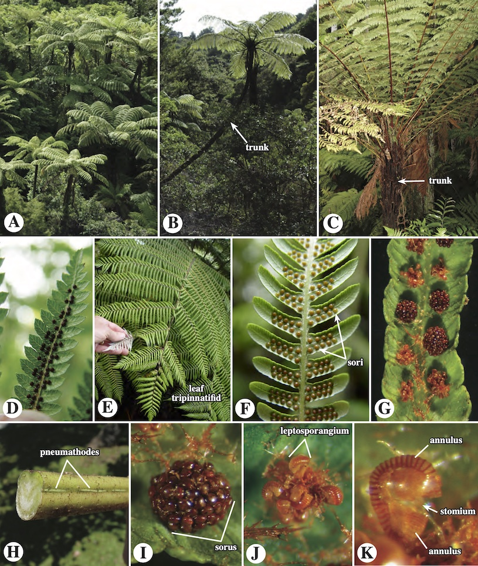
Simpson (2019)
Polypodiopsida: ciclo de vida

Evert & Eichhorn (2013)
Spermatophyta
- Semilla
- Heterosporia
- Reducción de la megaspora
- Retención de la megaspora
- Endosporia
- Tegumento
- Polen
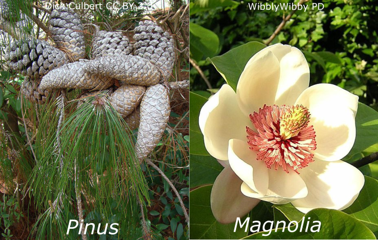
Gymnospermae
- Óvulos y semillas en la superficie de hojas modificadas (esporofilas)
- Estructuras reproductivas generalmente unisexuales y anemógamas
- Xilema con traqueidas
- Cycadophyta, Ginkgophyta y Coniferophyta
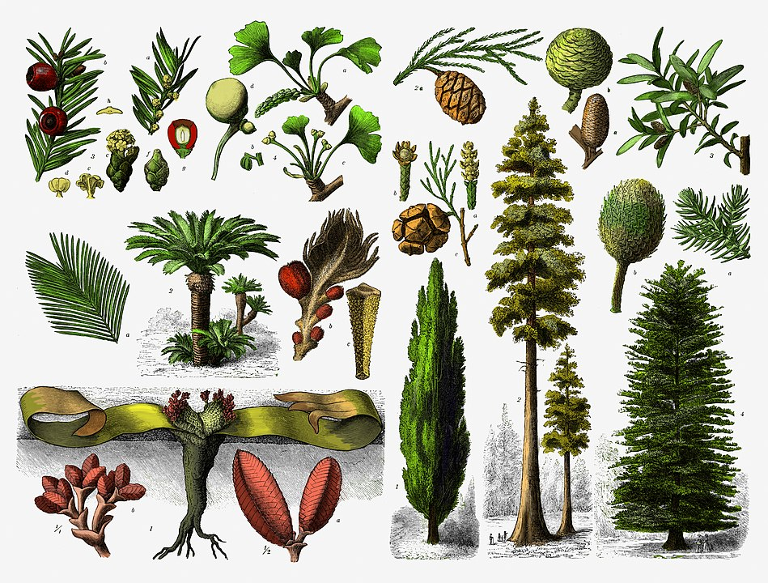
Brockhaus’ Konversations-Lexikon (1892)
Cycadophyta
- Tallo corto y erecto
- Hojas compuestas (pinnadas) espiraladas
- Dioicas (conos o estrobilos masculinos y femeninos)
- Cycadaceae y Zamiaceae
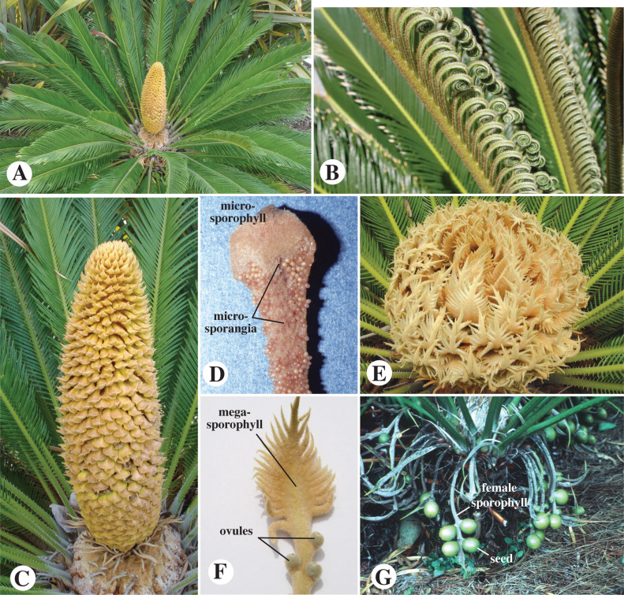
Simpson (2019)
Coniferophyta
- Árboles o arbustos muy ramificados
- Hojas simples, lineales, aciculares o subuladas
- Tubo polínico (sifonogamia)
- Comúnmente monoicas
- Cono femenino (bracteas y escama ovulífera)
- Cupressophyta, Pinophyta y Gnetophyta,
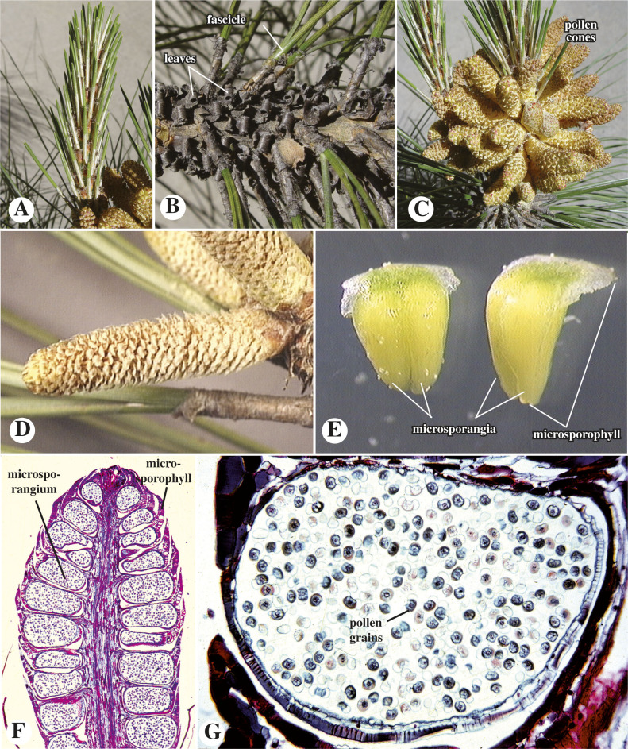
Simpson (2019)
Coniferophyta: ciclo de vida

Evert & Eichhorn (2013)
Angiospermae
- Flor
- Perianto
- Estambres
- Carpelo y fruto
- Óvulo con dos integumentos
- Endospermo
- Traqueas y Tubo criboso
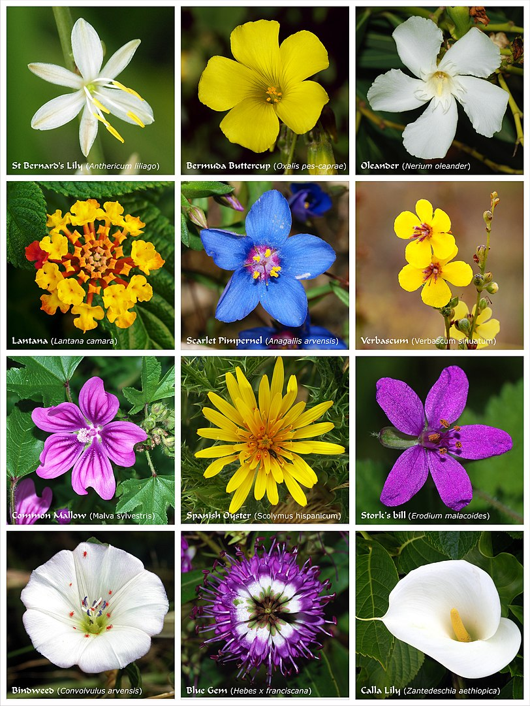
Alvesgaspar (2008)
{kind=link}
Procedimiento
Anthocerophyta
Identifique y describa las características del gametofito y el esporofito.
Cortes transversales con Safranina y Azul Alcián del gametofio y esporofito de Anthocerophyta.
Montaje húmedo de esporas de Anthocerophyta.
Marchantiophyta
Identifique y describa las características del gametofito y el esporofito.
Cortes transversales con Safranina y Azul Alcián del gametofio y esporofito de Marchantiophyta.
Montaje húmedo de esporas de Marchantiophyta.
Bryophyta
Identifique y describa las características del gametofito y el esporofito.
Cortes transversales con Safranina y Azul Alcián del gametofio y esporofito de Bryophyta.
Montaje húmedo de esporas de Bryophyta.
Lycopodiophyta
Identifique y describa la orientación de los ejes, la disposición y forma de las microfilas, posición y forma de los estróbilos.
Cortes transversales con Safranina y Azul Alcián de tallos de Lycopodium.
Montaje húmedo de esporas de Lycopodium.
Monilophyta
Identifique y describa la orientación de los ejes, forma y complejidad de las frondes, vernación, presencia de pelos y escamas, etc. Además identifique y describa presencia y formas de los soros e indusio.
Cortes transversales con Safranina y Azul Alcián de tallos de Monilophyta.
Montaje húmedo de esporas de Monilophyta.
Gymnospermae
Identifique y describa las características que le permitan diferencias entre Cycadophyta y Coniferophyta.
Cortes transversales con Safranina y Azul Alcián de tallos de Gymnospermae.
Montaje húmedo de granos de polen de Gymnospermae.
Angiospermae
- Raíz
- Tallo
- Hoja
- Flor
- Fruto y semilla
¿Preguntas?
Próximo práctica
- Actividad calificativa